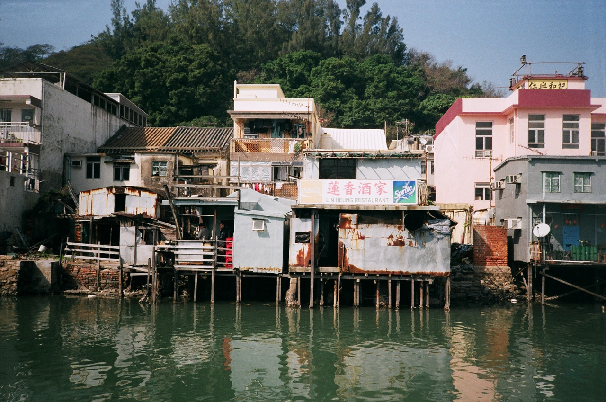
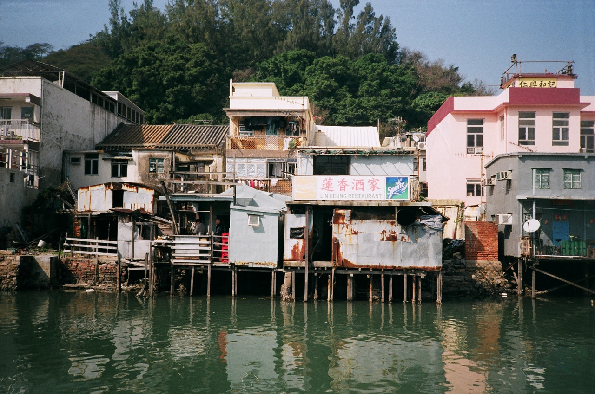
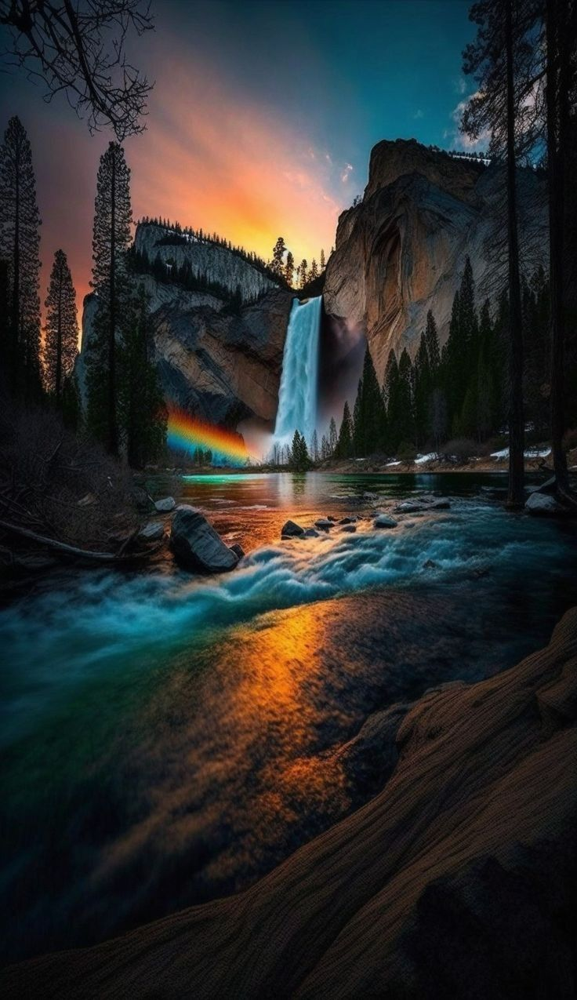
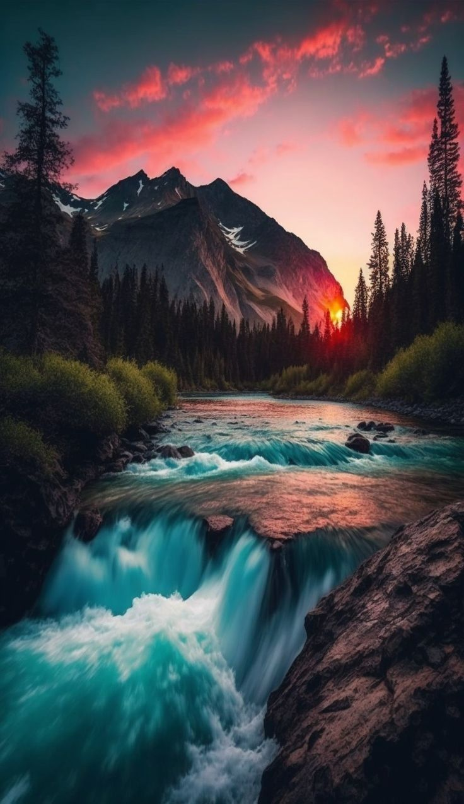
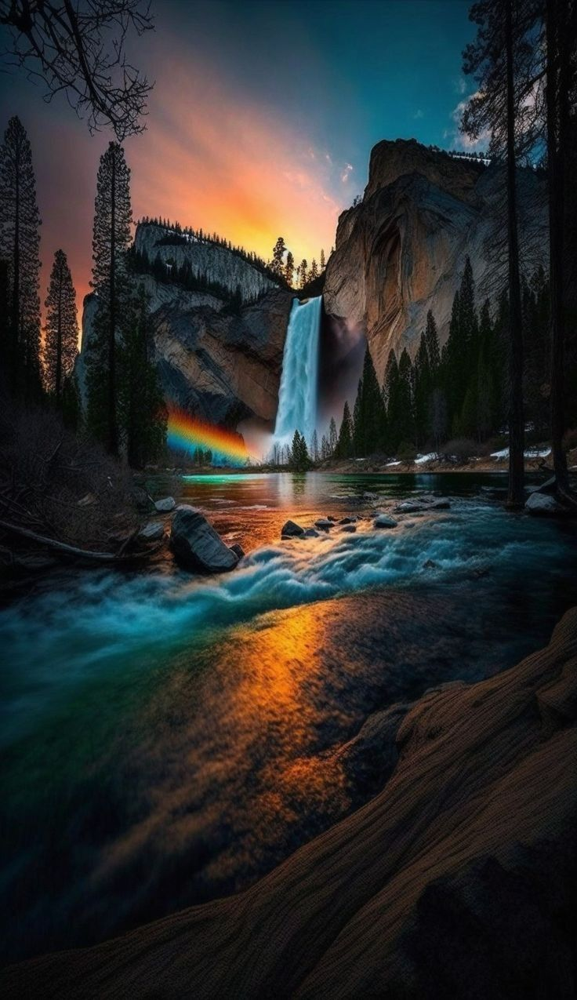
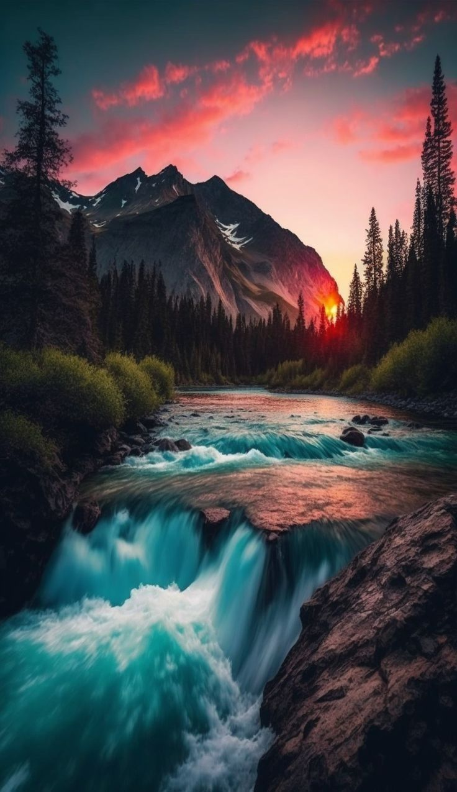

Hitha
Back to artists
 

 





About Hitha
Hitha grew up exploring train tracks and abandoned buildings in New Zealand. Finding these inquisitive places interesting to photograph, he travelled further and further a field to catch the perfect shot. Now his main influences are national geographic photos and work from people that don’t just follow the usual path and go on the usual holidays. Hitha is part of a small project called the Roamers Club which should result in a some work being released later this year. He also releases an annual zine called ‘Out There’ which documents a bunch of photos he has have taken across the globe during that calendar year. he goes away for months on end, gathering work for a book that will hopefully be dropping as soon as possible.
Find more photos at www.4160weeks.tumblr.com